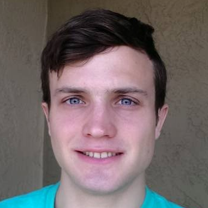

Vikas Bansal (Principal Investigator)Vikas is an assistant professor in the Department of Pediatrics, School of Medicine at UC San Diego since May 2014. He trained in Computer Science (undergrad at IIT Delhi), Bioinformatics (Ph.D. at UCSD) and Human Genetics (Scripps Research Institute).email: vibansal AT ucsd DOT edu |
|
Peter Edge, Ph.D. studentPeter is a graduate student in Computer Science and Engineering at UCSD. He graduated with a B.S. from the University of Minnesota in June 2015. His current research is focused on developing algorithms and software tools for haplotyping using DNA sequencing technologies. His research has been published in the journals Genome Research, Nucleic Acids Research and PNAS.email: pedge AT eng DOT ucsd DOT edu |
 |